Małopolskie
Najważniejsze miasta
Kraków
Kraków to jedno z najpiękniejszych miast w Polsce, pełne zabytków, w tym Wawelu, Rynku Głównego i Sukiennic. Miasto jest także centrum kultury, sztuki i edukacji, a jego historia i atmosfera przyciągają turystów z całego świata. 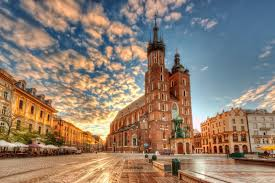Zamek Królewski na Wawelu
Jeden z najważniejszych zabytków Polski, dawna siedziba królów. Można tu zobaczyć Katedrę Wawelską, Groby Królewskie i słynnego Smoka Wawelskiego.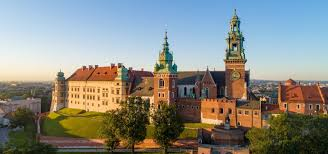
Rynek Główny i Sukiennice
Serce Krakowa, największy średniowieczny rynek w Europie. Znajdują się tu zabytkowe kamienice, Kościół Mariacki i kultowe Sukiennice, pełne sklepików i galerii sztuki.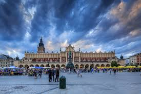
Kopalnia Soli w Wieliczce
Jedna z najstarszych kopalni soli na świecie, wpisana na listę UNESCO. Podziemne kaplice, solne rzeźby i jeziora sprawiają, że to magiczne miejsce przyciąga turystów z całego świata.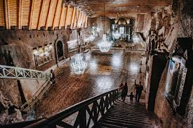
Zakopane
Zakopane to stolica polskich Tatr, słynąca z góralskiej architektury, klimatycznych karczm i popularnych tras turystycznych. To miejsce, które łączy miłośników zimowych sportów, pieszych wędrówek i kultury góralskiej. 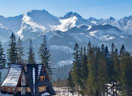Gubałówka
Popularne wzgórze z pięknym widokiem na Tatry, na które można wjechać kolejką linowo-terenową. Na szczycie znajdują się restauracje, stragany z pamiątkami i ścieżki spacerowe.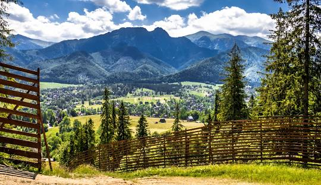
Morskie Oko
Największe i jedno z najpiękniejszych jezior tatrzańskich, do którego prowadzi malownicza trasa. To obowiązkowy punkt dla turystów odwiedzających Tatry.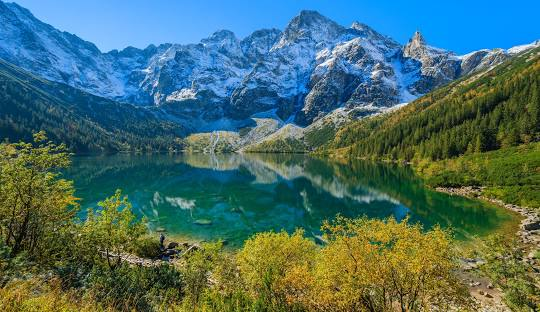
Krupówki
Główna ulica Zakopanego, pełna sklepów, restauracji i tradycyjnych góralskich karczm. Można tu spróbować oscypka, kupić pamiątki i poczuć atmosferę górskiego kurortu.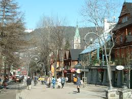
Oświęcim
Oświęcim to miasto o tragicznej historii, znane przede wszystkim z obozu Auschwitz-Birkenau, który jest symbolem Holokaustu. Oprócz tego, miasto oferuje piękne tereny przyrodnicze i bogatą ofertę kulturalną, w tym festiwale muzyczne i artystyczne. 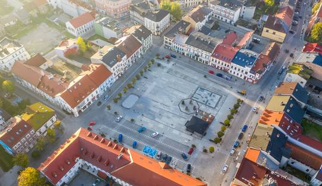Miejsce Pamięci i Muzeum Auschwitz-Birkenau
Miejsce pamięci po byłym niemieckim obozie koncentracyjnym i zagłady. Zwiedzanie tego miejsca to poruszające doświadczenie, przypominające o tragicznych wydarzeniach II wojny światowej.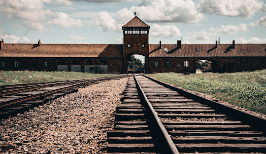
Zamek w Oświęcimiu
Średniowieczna warownia z malowniczą wieżą widokową. Wewnątrz mieści się muzeum prezentujące historię miasta i zamku.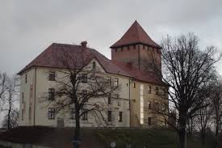
Synagoga i Muzeum Żydowskie
Jedna z najstarszych synagog w Polsce, obecnie pełniąca funkcję muzeum. Można tu poznać historię i kulturę żydowskiej społeczności Oświęcimia.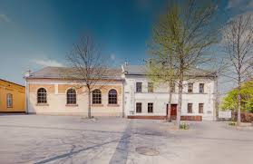